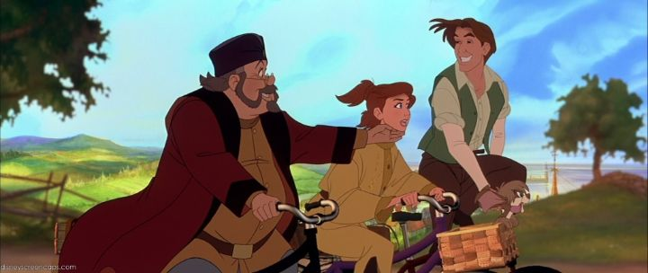

There aren't many American family movies set in Russia. Which is understandable, given the Cold War and all. Not to mention that the country revealed itself to be led by blood-hungry Nazi's when they tried to full-scale invade their innocent neighbours in 2022. That makes it complicated to appreciate any of the cultural treasures of the country, most of which was created before their Soviet era. Fox Animation Studios, with the help of Don Bluth and Gary Goldman, probably saw this as an opportunity to inspire a new princess fairy-tale, inspired loosely by the disappearance of the real life Duschess Anastasia Nikolaevna of Imperial Russia. And as a complete package, "Anastasia" is probably Don Bluth's biggest masterpiece, a big-budget spectacle with memorable characters and excellent songs (which would later even inspire a stage adaption). Thanks to the quality and strong marketing, it was the closest a rival studio had come to challenging Walt Disney for the animation crown. So much so that many viewers confused this as a Disney production, a mistake that continues to this day. There is a generally more mature leaning to the movie - the fantastical elements feel like afterthoughts to the core story of fateful romance and historical tragedy - which might help adults appreciate the movie more than Disney's output from the 90's, even if some kids (young boys in particular) might be less enthusiastic. The real story is that the Tsar and Romanov family were killed in a revolution in 1917, but that the youngest girl of the family, Anastasia, was never found, and rumours persisted that she survived the attack, and that a missing princess was hiding among the people. In this movie, a fictionalized Rasputin is shown as an evil shaman that sells his soul to get revenge for his dismissal from the court, and leads the people to their violent revolution. Anastasia and her grandmother barely escape while Rasputin drowns in an icy river, but Anastasia gets lost behind in the commotion. A deacde later, Anya is a young woman sent away from her orphanage, but intent on finally discovering her true past and family (due to amnesia, she has no idea where she came from). Dimitri and Vlad, both originally workers in the palace but now con-men in a new Soviet Russia, plan to find a girl to pretend to be the real Anastasia to get a reward from grandmother Empress Maria in Paris. Their paths cross, and Anya seems like the perfect actress for the role, and since her only clue is that her real family might also be in Paris, she plays along. During the journey, clues keep suggesting that she might be the real deal, and her transactional relationship with Dimitri grows to love out of the miracle coincidence. Rendered in ultra-widescreen for the cinema, "Anastasia" is the most luxurious American animation I can recall outside of Disney, even compared to Dreamworks's output like "The Prince of Egypt." It does for Russia what Disney's "The Hunchback of Notre Dame" did for France, and rivals that film's beauty (no small feat, as it's still one of the best Disney's ever done). The parallaxed detailed cityscapes are beautiful, and an opening scene is full of hundreds of choreographed cartoon dancers, which as far as I can tell, were all drawn and not CGI. It's a lucious experience that sings on a big screen, and the Bluray release looks great. The character animation, this time almost exclusively on human adults instead of toddlers or animals, is grounded and polished beyond what Don Bluth had done prior, a refreshing and impressive output.And there's something poetic about the story of romance and the girl who went from peasant orphan to lost Princess in a matter of days. It's a perfect, if simple, story that can rival the best plays. It also fullfills a classic fantasy for young girls, and the movie seems to know its audience. Anya, despite her amnesia trope and clumsy, absent-minded persona, is also strong-minded and independent, much more than just a vessel to drive the story. She's a fun role model (despite a New-York-style personality and voice), while also allowing the fantasy of dressing up and play royalty overcome her. And the romance is so sweet... I imagine girls, and perhaps mature boys, will be sold, but will young boys be sold on this cartoon?  Perhaps that's why Bluth added Rasputin as the cartoonish villain: after Anastasia is proven to be alive, his comic-relief sidekick Bartok the white bat is sent to Hell where his corpse languishes, body parts falling off as he sings about finally finishing his revenge. It's as fun and gruesome as it sounds, somewhat dark for children, but played for laughs to ensure viewers wouldn't be too scared. It's the only fantasy element to the otherwise grounded story, adding a bit of magic and action as Rasputin sends magical demons to try to derail their journey to Paris. Adults might be disappointed at the addition, but it's far less egregious than Disney's attempts to pander to children (for example, "Hunchback" and those talking gargoyles). For boys, it's probably the best part of the movie, enough for them to give a chance to the story. Even as an adult, it helped the watchable factor for me, especially since it allows for one of the best songs with "In the Dark of the Night." The songs are all great in the movie. "Once Upon a December" is probably the most remembered, but "In the Dark of the Night," "Rumour in St. Petersburg," and "Journey to the Past" are just as delightful. The choreography and dancing gives a strong broadway quality to the numbers, much in line with Bluth's other musicals, but that feels more appropriate for this story than usual. There's bigger stars in the voice cast than standard for the 90's, including Meg Ryan, John Cusack, Kelsey Grammer, Christopher Lloyd, Hank Azaria and Angela Lansbury. Naturally, they're all great... perhaps not all believable as Russian (the two leads sound like they're from New York or Chicago), but fun for an American film. The movie did get a direct-to-video spin-off prequel called "Bartok the Magnificant." It's certainly not the only such sequel Don Bluth's films have gotten, but Don Bluth and Gary Goldman both were actually involved with this one, unlike other cases where the creative rights were taken from them without their involvement. It's worth mentioning here since the "Anastasia" Bluray includes the entire movie as a bonus feature, a nice free extra. As a prequel, it covers Bartok the bat's days as a street performer and con-artist in pre-Soviet Moscow, getting tasked to rescue the child Tsar from the witch Baba Yaga. There are a LOT of animation shortcuts in the background if you look for them (despite the budget being almost half of the much nicer-looking "Anastasia"), and a few cultural mistakes of confusing other European countries with Russia. But the animation of the main characters is still great, and this makes for a fun adventure that kids might prefer compared to the romance-led plot of the original movie. "Anastasia" still gives me a lot of conflicting feelings. It's probably my favourite of Don Bluth's work, even more so than his traditional classics like "The Secret of NIMH" or "All Dogs Go To Heaven." It's a beautiful story, but it's set of Russia, the last place I want to give any acknowledgement to, especially in the 21st century. Perhaps it's better to imagine that the beautiful Russia died a long time ago in 1917, and that the country since then has no relation to it. This, like almost everything of value from Russia, was set before that time, and it might be easier to imagine "Anastasia" as a fantasy of a long-lost civilization.
- "Ani" More reviews can be found at : https://2danicritic.github.io/ Previous review: review_An_American_Tail_-_Fievel_Goes_West Next review: review_Angel_Beats